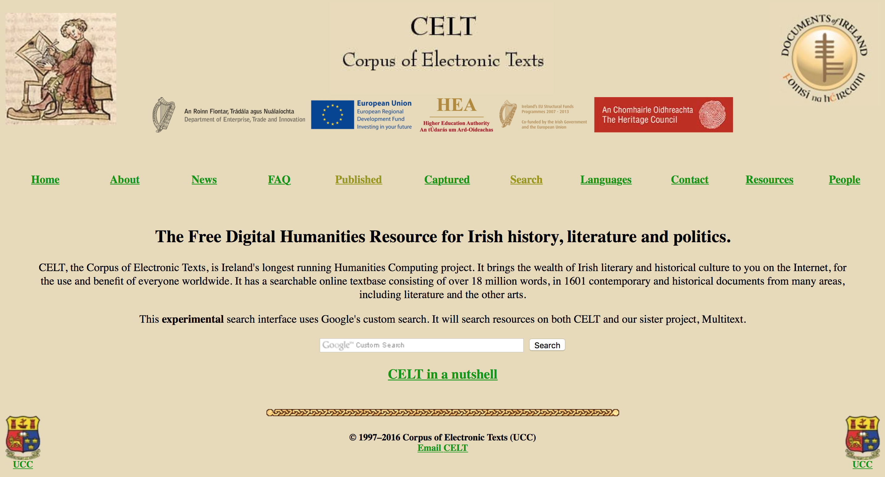
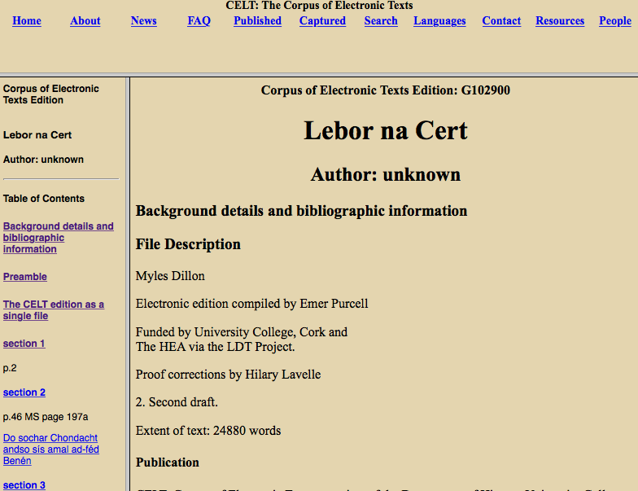
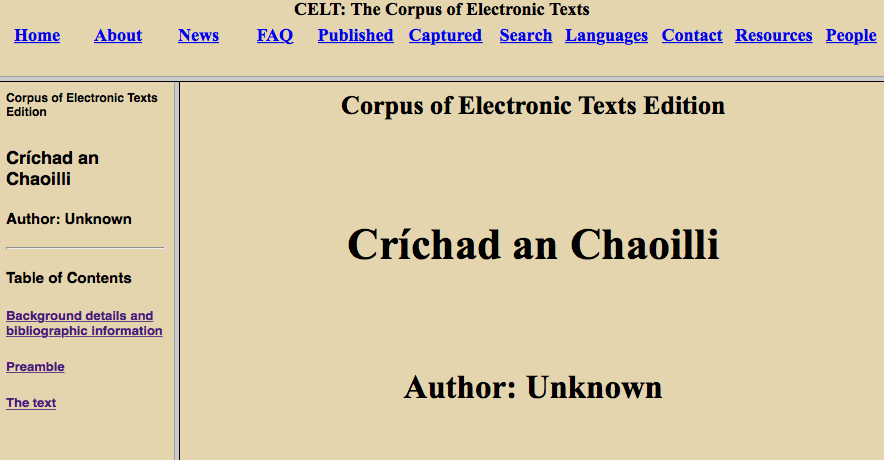

CELT - Corpus of Electronic texts
Table of Contents
Abstract
This review addresses the ‘CELT - Corpus of Electronic texts’ archive, developed and housed at University College Cork, Ireland. CELT is a digital humanities archive – and arguably a scholarly platform – comprising 1600 documents. An account of its piecemeal historical evolution, spanning the emergence of the Digital Humanities in Ireland, is given in this review. This review contextualises the range of content (documents, editions, works), for the most part digital representations based on TEI, pertaining to the study of the Irish language and Celtic civilisation and culture, collected together in CELT – as it stood in April 2017.
Introduction

The ‘About’ section provides a clear and useful summary of CELT, explaining “Texts are accompanied by introductions, background information, graphics, translations where possible, and scholarly bibliographies”.1 The ‘News’ section usefully highlights recently ingested works, which fittingly focus on the city of Cork and the Munster region which UCC, CELT’s host institution, serves. Many of the printed texts have local relevance or are linked to the research interests of those active in the relevant Departments and Schools of UCC. The focus is on medieval and early modern works in English and Gaelic (Irish), dealing with or pertaining to Celtic literature and culture. A range of Latin texts concerning early Christian literature and a smattering of texts in European languages (emanating from the notable Germanic interest in, and influence on, Celtic philology from the late nineteenth century) sit alongside a range of editions pertaining to the evolution of the Irish language(s), its study and lexicographical developments. Various ephemera, such as a PDF scanned edition Music in Ireland: a symposium (1952) edited by Aloys Fleischman, are present. However, for the most part CELT comprises scholarly editions, based on TEI, of major works pertaining to the study of the Irish language and Celtic civilisation and culture.
The FAQ section is a model of the genre, clearly and often humorously written. Rapidly dealing with general and specific queries likely to be frequently directed towards the platform, so clearly presented and useful it may well have been refined out of a ‘top tasks’ analysis of target users. The FAQs are useful to the unknowledgeable and the initiated, both professionally and technically, and are a credit to CELT’s editors and managers.


Both works contain extensive bibliographic information, useful to contextualise the edition, its origins, and individuals associated with its editing and publication. Here, the rigour of the CELT methodology, drawing on that intrinsic to the study of the ancient and medieval world, is on full display. Exhaustive detail is given regarding sources, encoding, editorial practices and decisions (hyphenation, translation and transliteration, editing and normalisation –technically and editorially). Usefully any relevant revision history of the specific digital work being viewed is clearly presented.
Project history
Various time-delimited sub-projects and collaborations are mentioned in some of the editorial comment. The ‘Writers of Ireland’ project2 provides a useful synopsis of CELT: “an internet-based corpus of the primary sources of History and Irish Studies in Irish, English, Latin, and French ... a pioneering and highly successful Humanities Computing project. It blends technology with humanities scholarship and easy access.” Question 13 in the FAQs notes:
CELT only has one member of staff, and to put all Irish historical literature online would take a lifetime or two ... CELT started out as a project within Irish Medieval History to promote a better understanding of this period, based on providing reliable online sources of works that might be difficult to access, to scholars, students, and to the general public. This was before archive.org or G**gle Books (sic) were available.
The manner in which CELT is platform-agnostic is worthy of significant praise.3 This seems to have been a deliberate decision, and should be lauded; many other Irish Digital Humanities projects, lavishly funded and undertaken after CELT was established, have fallen by the wayside after failing to adequately consider their long-term utility and survival or absorb the obvious lesson CELT presented to them.
Scope and utility
The relative simplicity, in terms of design and functionality, of the CELT platform means that any contemporary OS or web browser can display its contents (this reviewer used Safari 10.1 on Mac OS X 10.11.6). This is to the great credit of the project’s engineers and managers. Texts are presented in frames and are conversely available, as SGML/XML, for FTP download, instructions for which are given in the FAQ section.4 For non-technical or specialised users the FAQs kindly explain how to access, view and download texts.
Organisationally, although slightly non-intuitive, the schema developed is robust and clear, if a little idiosyncratic. The ‘Published’ section breaks down texts into linguistically and thematically organised sections, above an exhaustive table broken down firstly by thematic section and then alphabetically by the title of the text, with appropriate links to HTML, XML and SGML for each text. Accessibility is dealt with variably at both collection level – sometimes discussed in explanatory introductions regarding specific sub-collections or works / editions – and more fully across the FAQs.
The ‘Captured’ section lists texts by language: Hiberno-English, French, Irish, Latin, Translated, indicative of CELTS’s medieval focus. The first category, broken down by century, contains an extensive collection of the printed works of James Connolly (1868–1916), the socialist and revolutionary, and Patrick Pearse (1879–1916), writer and revolutionary, both central protagonists in the Irish 1916 rising. Furthermore, this section has a range of works and editions by nationalist historian and activist Dorothy Macardle (1889–1958). Out of copyright, these will be of use to a wide range of scholars interested in Irish nationalism and twentieth-century Ireland.
A catalogue of the works of Patrick Sheehan (1852–1913), the catholic priest and novelist, sits alongside various ephemera relating to the gaelic literary revival, and a range of poetic and dramatic works by W. B. Yeats (1865–1939). A plethora of legal and political documents relating to statehood and constitutional developments on the island of Ireland, right up to the 1998 Belfast Agreement, are also provided. Ontologically idiosyncratic, their presence is welcome and indicative of the practical approach taken by CELT in digitising texts relating to Irish history and civilisation. Texts from the thirteenth to the late twentieth centuries will be useful to a range of humanities and Irish studies teaching. The ‘Translated Texts’ sub-section collects works translated from: Irish; French; middle English; Latin; Italian; Spanish and German. Copyright issues are outlined in welcome granularity at the text/item level, and accurate bibliographic detail is never lacking.
The ‘Resources’ section5 provides a range of links to other scholarly resources, initially broken down by ‘journals’, ‘bibliographies’ and ‘libraries and archives’, it then lists various digital collections, services, resources as well as a limited selection of bibliographies regarding major figures treated in or related to various CELT texts. Applicable to the generalist and specialist alike, this simple page of links is indicative of the open and collaborative nature of the CELT project and the context within which it evolved.
Editorial practice
Using the CELT edition of Anglo-Irish poems of the Middle Ages 6 as an exemplar, detailed bibliographical and editorial information (translator, compiler of the electronic edition, encoding, normalization etc.) is given alongside crucial information regarding versioning, copyright and restrictions regarding reuse. The inclusion of a detailed ‘sources’ section is welcome, as a contextual guide to the uninitiated student or academic coming fresh to the area. Thus CELT is more than a raw collection of TEI-encoded texts, it is a scholarly platform providing valuable academic material and context for many of the works it houses.
Crucially, in terms of digital scholarship, detailed information is given regarding any revisions undertaken. For Anglo-Irish poems the user can see that various changes were made to the TEI file 2003–2010. A summary of each change comprises: the date; the individual who undertook it; a summary of the revision undertaken. Thus the texts present in CELT can be used for scholarly purposes with considerable assurance that the specific version used will be clearly discernible from future revisions or versions.
Quality assurance is transparently addressed across the CELT platform. Corrections are noted at the item and object level, and their consideration and implementation are discussed in the FAQs and where necessary in the introduction to a specific item or /text. The ‘news’ section lists works and collections ingested in recent years.
The ‘Online Index to the Lebor Gabála Érenn (Book of Invasions) based on R.A.S. Macalister's translations and notes’7 is an example of a small number of indexes, concordances, and scholarly commentaries that can be found on CELT. This ‘Online Index to the Lebor Gabála Érenn’ is based on the endeavour of a named individual, drawing on a work whose copyright is owned by the Irish Texts Society. Indicative of the collaborative nature of CELT, especially its flexible approach to ingestion, it exemplifies its crucial consideration of authorship and copyright. Together this concern marks the platform as a publishing option likely to be considered by many textual scholars active in the Digital Humanities.
Search functionality and technical provision
Providing a simple Google search interface is both intuitive and logical in terms of the limited resources available to the project. This reviewer undertook a non-scientific range of test searches regarding people and bibliographic works that he expected to be present; results seemed accurate and exhaustive. Some may quibble with the absence of complex ‘advanced search’ functionality to take full advantage of the minutiae of metadata and markup emanating from the TEI versions of the texts. However cognisance of the time and resources allocation necessary to construct, yet alone maintain, such functionality in an online context intones the wisdom of deploying the lightweight and robust Google search functionality atop the CELT corpus. Whether this reliance on Google will last is open to question, in light of the behemoth’s decision to discontinue development and maintenance of the ‘Google Site Search’ service from April 2018.8 It remains unclear if the URL of any given CELT item or text are persistent (there is no mention of DOIs), however each has a unique identifier within CELT, allowing accurate referencing of each TEI object.
All texts are marked up in TEI and then converted to HTML, with both formats made available to users. CELT, as a collection of scholarly digital editions should be, is highly attuned to the tradition and practice of textual scholarship in both analogue and digital terms. Thus a bibliographic or editorial précis of specific texts often outlines issues such as font and character presentation in different formats, as well as miscellaneous editorial decisions taken in transforming analogue texts into digital objects. This attention to detail and scholarly practice is welcome.
Some may quibble that TEI versioning (and attendant technical and editorial decisions made explicit) is not dealt with either systematically or explicitly for each encoded work. However the dedication to a granular description of technical and editorial facets and decisions – regarding encoding, metadata, copyright etc. – for each item allows users to assess each digital rendering on its own merit. Thus there is no overarching data model per se beyond bog-standard TEI and SGML/HTML – indicative of both the pragmatism exhibited by CELT in technical and managerial terms, which has certainly imbued its longevity (keeping legacy and ongoing costs down) and how its technical conservatism has reified its utility (not darting down technological rabbit holes as IT and academic fashion changes). Preservation is dealt with ad hoc – CELT has been around for two decades, older than most equivalents, and looks likely to continue for some time – its ability to adapt, survive and evolve through the highs and lows of the Celtic Tiger in Ireland suggests it will continue to have a bright future.
Conclusion
Somewhat eclectic, the range of texts found in CELT will be of use to a wide range of humanities scholars. Conceptually and methodologically CELT is coherently organised and presented, and both undergraduate students and experienced scholars are well served. The longevity of the project is indicative of the tenacity of its originators. Ingesting texts when occasional piecemeal grants and funding allowed, the long-term coherence of CELT in such circumstances must be praised. The elegantly sparse design philosophy, visually and technically, is admirable. In terms of robust functionality and ongoing digital relevance, as CELT faces into its third decade of existence, this academic collection of texts remains of the highest calibre within digital humanities scholarship. In many ways CELT resembles the ‘Historical Text Archive’9, in both its longevity and wide-ranging, though somewhat disparate, unifying concept. As humanists, linguists and computer scientists, amongst other researchers, increasingly view text archives in a multiplicity of ways, the uses to which CELT can be put grows. A comparison with the Linguistic Data Consortium, based at the University of Pennsylvania10 illustrates the extent to which such coprora can be relied upon by natural language processing and attendant artificial intelligence research.
Conceptually coherent and methodologically robust, there is an admirable blend of pragmatic scholarship, in editorial and technical terms, on display across CELT. Developing a rigorous typology or a universally applicable ontology is close to impossible in scholarly publishing, digital or analogue, and pragmatism is a meritorious creed. Some users may quibble at the absence of cross-referencing – of concepts, entities or works – across and between texts. Others might construe CELT as an artefact of a decades-old approach, lacking any linked-data facets or applications. However the lo-fi nature of its scholarly design and technical implementation, with an emphasis on textual precision and editorial accuracy, indicate how its relevance and utility has only increased over time. Moreover, that CELT continues to expand as it enters its third decade of existence – there are few better metrics of success in academic or scholarly research and publishing – marks it a rare example of ongoing success and scholarly relevance in a discipline often characterised by its critics, not unfairly, as a collection of defunct websites.
Bibliography
- O’Sullivan, James, et al. 2015. “The Emergence of the Digital Humanities in Ireland.” Breac. A Digital Journal of Irish Studies. Issue on Digital Humanities. https://web.archive.org/web/*/https://breac.nd.edu/articles/61541-the-emergence-of-the-digital-humanities-in-ireland/.
Notes
- https://web.archive.org/web/*/http://www.ucc.ie/celt/about.html. ↑
- https://web.archive.org/web/*/http://www.ucc.ie/celt/writers.html. ↑
- O’Sullivan et al, ‘The Emergence of the Digital Humanities in Ireland’ Brea: a digital journal of Irish studies October 07, 2015 – https://web.archive.org/web/*/https://breac.nd.edu/articles/61541-the-emergence-of-the-digital-humanities-in-ireland/. ↑
- https://web.archive.org/web/*/http://celt.ucc.ie/faq.html. ↑
- https://web.archive.org/web/*/http://celt.ucc.ie/links.html. ↑
- https://web.archive.org/web/*/http://www.ucc.ie/celt/published/T300000-001/index.html. ↑
- https://web.archive.org/web/*/http://www.ucc.ie/celt/indexLG.html. ↑
- see: https://web.archive.org/web/*/https://enterprise.google.com/search/products/gss.html. ↑
- https://web.archive.org/web/*/http://historicaltextarchive.com/. ↑
- https://web.archive.org/web/*/https://www.ldc.upenn.edu/. ↑
@article{celt,
author = {O'Riordan, Turlough},
title = {CELT - Corpus of Electronic texts},
journal = {RIDE – A review journal for digital editions and resources},
number = {6},
year = {2017},
doi = {10.18716/ride.a.6.1},
url = {https://doi.org/10.18716/ride.a.6.1},
}TY - JOUR
AU - O'Riordan, Turlough
TI - CELT - Corpus of Electronic texts
T2 - RIDE – A review journal for digital editions and resources
IS - 6
PY - 2017
DA - 2017/09
DO - 10.18716/ride.a.6.1
UR - https://doi.org/10.18716/ride.a.6.1
PB - Institut für Dokumentologie und Editorik e.V.
LA - en
ER - O'Riordan, T. (2017). CELT - Corpus of Electronic texts. RIDE – A review journal for digital editions and resources, (6). https://doi.org/10.18716/ride.a.6.1O'Riordan, Turlough. "CELT - Corpus of Electronic texts." RIDE – A review journal for digital editions and resources, no. 6, 2017. https://doi.org/10.18716/ride.a.6.1.O'Riordan, Turlough. "CELT - Corpus of Electronic texts." RIDE – A review journal for digital editions and resources, no. 6 (2017). https://doi.org/10.18716/ride.a.6.1.